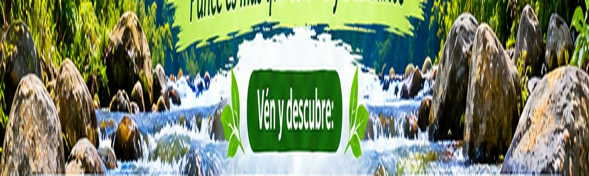

Compra de productos por encargo
Solicita café, frutas, hortalizas, miel y productos transformados.
Participa, aprende, comparte e impulsa el desarrollo sostenible del territorio.
← Volver al inicioInformación para conocer el territorio con respeto y apoyar a sus comunidades.

Solicita café, frutas, hortalizas, miel y productos transformados.
Apoya la conexión directa entre productores y hogares.
Conoce oportunidades de colaboración local.
Talleres de agroecología, cocina, naturaleza y turismo.
Iniciativa conceptual que requiere estructura y reglas transparentes.
Conoce cultivos, procesos productivos y saberes del territorio.